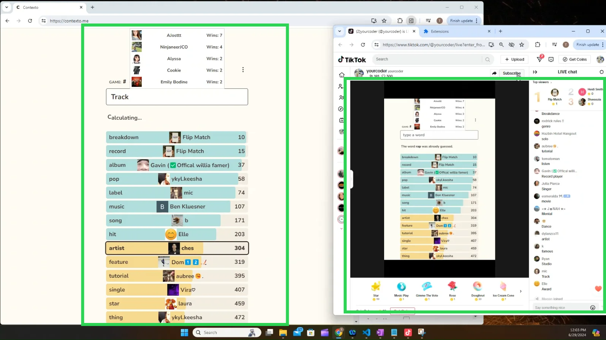
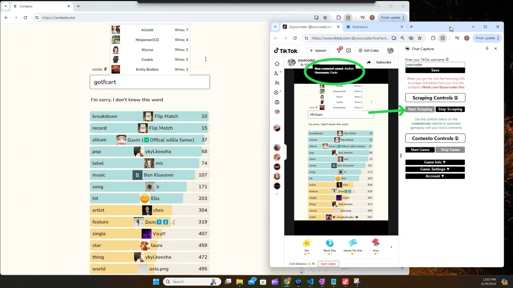
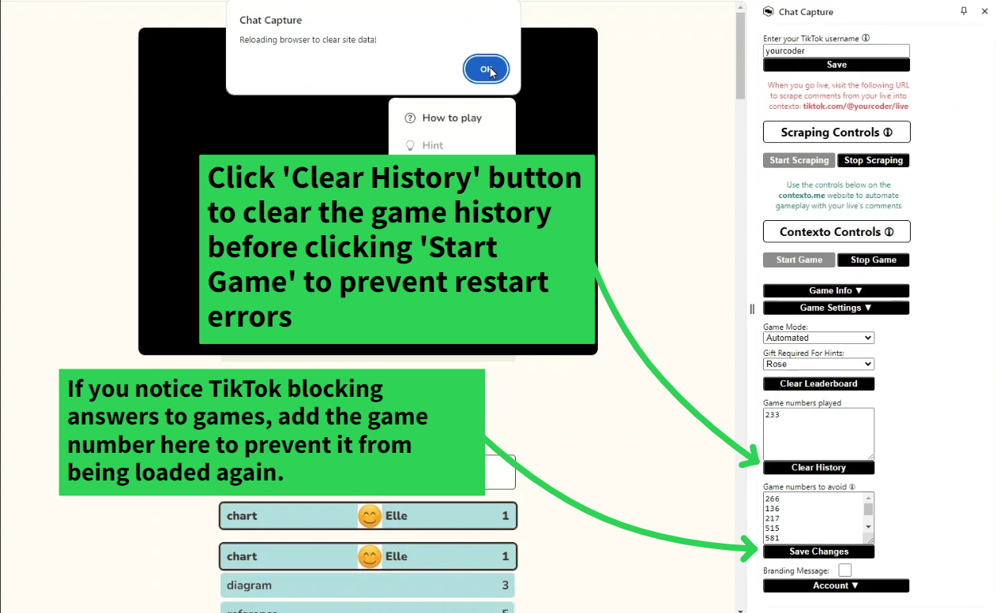
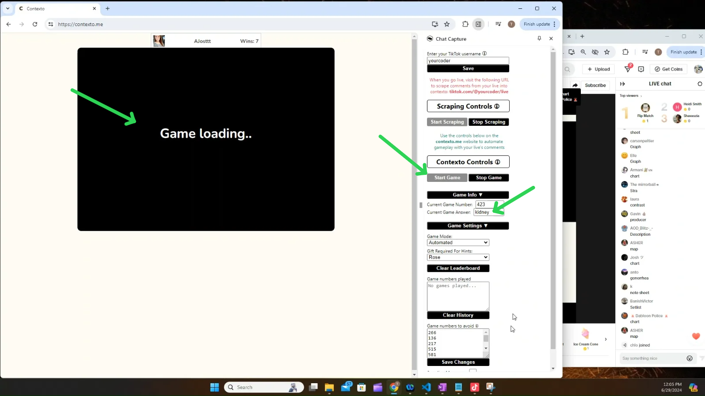
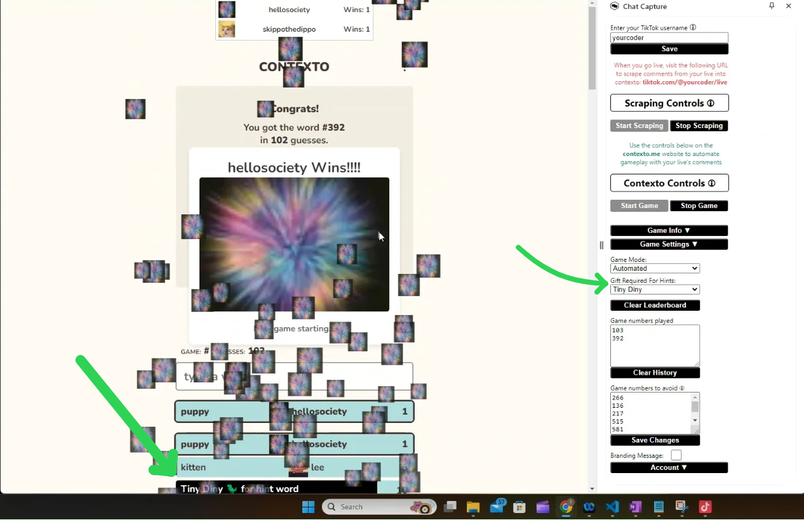

Getting Started with ChatCapture
Requirements:
- Access to a laptop for running the chrome extension
- Access to go live from a mobile phone or TikTok Live Studio
Chat Capture Setup:
Download the extension from RunChatCapture.com and add it to chrome
Navigate to contexto.me, open the extension and sign up
Check your email for the verification code
Verify your email and login
Start your 7 day free trial! Click "Start Subscription" and the browser will automatically navigate to stripe, and back to contexto.me once you successfully start a trial.
Enter and save your tiktok username. Hover over the icon above the input for an example.
Game Controls and Going Live:
Both contexto.me and tiktok.com browser windows must be open for your live to capture comments.
Position the contexto
window so that your phone or TikTok Live Studio can record it without it being covered.
Position the tiktok window so that at least part of it is visible, otherwise it will become inactive
and stop updating.

Right after you start your live, refresh your TikTok live's browser window and click the 'Start Scraping' button.
Scraped comments appear at the top of the page.

To ensure games run smoothly, click the Clear History button at the start of your live.

Click 'Start Game' in contexto's window to let your audience start playing together. Each game's answer is in the Game Info section.

To change the gifts the game prompts the player's for, choose Rose, Tiny Diny, or Donut from the gift dropdown.

WHAT ARE YOU WAITING FOR, IT'S TIME TO GO LIVE! ENJOY!